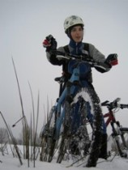

Мир экстремального велосипеда
Город — единство непохожих. Это высказывание Аристотеля поразительно подходит к современному миру, когда люди, в особенности подростки и молодежь, стремятся подчеркнуть свою индивидуальность, свою «непохожесть». С другой стороны, потребность в общении, признании, поддержке продолжает толкать людей к объединению. Только в многомиллионных мегаполисах это «единство» образуется скорее не на уровне города, а в рамках всевозможных обществ, кружков, субкультур... Кого-то привлекает турклуб или театральная студия, кого-то сплачивает любовь к панк-року или футболу, а кого-то притягивает экстремальный велосипед.
Субкультура, возникшая вокруг экстремального велоспорта, закрепилась в России достаточно прочно и активно развивается. Однако крупных научных работ, специально посвященных этой теме, нет. Встречаются лишь упоминания или небольшие описания в статьях «об экстриме» общего характера, зачастую эти статьи написаны в жанре, далеком от научного. Особый интерес представляет электронная страница одного из пользователей сайта planeta.rambler.ru, которая является виртуальной версией учебного проекта «Неформальные движения и субкультуры». Пожалуй, это единственная русскоязычная работа, в которой ВМХеры описываются с точки зрения молодежных «спортивных и околоспортивных» субкультур.
Люди, увлекающиеся экстремальным велосипедом, сами себя называют байкерами. Такое же название имеют и мотоциклисты, из-за чего порой происходит некоторая путаница. Иногда даже в исследовательских статьях как бы упускается из виду, что слово bike (англ. разг. — сокр. от bicycle) означает, прежде всего, велосипед, а biker — велосипедиста. Поэтому в данной работе понятие «байкер» употребляется именно в таком значении. Здесь уместно отметить, что в ходе исследования выявилась небольшая разница в значениях слов «велосипед» и «байк» «Велосипед для меня это просто средство передвижения для простой прогулки, а байк — это слово, означающее экстремальный вид велосипедов» , «Велосипед — это такое распространенное название, а байк — более приближен к экстриму».
Один из видов велосипедного спорта. Велосипедный спорт на треке бывает 3-х видов: спринтерская гонка, индивидуальный зачет и гонка преследования. Соревнования проходят на специальном треке, который имеет деревянное или бетонное покрытие, длина окружности которого составляет 250-300 метров.
Следующий вид велоспорта входит в программу Олимпийских игр. Чемпионаты по этой дисциплине проводятся во многих странах мира, в том числе и в России. Это кросс-кантри, то есть, по сути, гонки по пересеченной местности – настоящий дух спортивной борьбы, проверка на прочность и выносливость. Как и всякий олимпийский вид спорта, они подчиняются достаточно жестким правилам - с ними вы также можете ознакомиться в этом разделе нашего сайта. Здесь же вы узнаете, какие требования предъявляются к велосипедам для этого вида гонок. И это действительно важно, поскольку, если еще лет десять назад маунтин байки ненамного отличались друг от друга, то сегодня выпускается множество специализированных моделей, и при таком выборе нужно уметь ориентироваться!
Существует несколько видов велоэкстрима, пришедших из других видов спорта – например, из лыжного (это параллельный слалом), слоуп стайл (из сноубординга). Последний вид – самый зрелищный и самый адреналиновый, это настоящая победа над гравитацией, доступная только опытному спортсмену, сумевшему научиться лучшему в каждом из направлений велоспорта. Здесь оценивается не время, но красота и оригинальность трюка. Соревнований по этому виду проводится немного, но побывать на них стоит…
История возникновения велосипедного спорта
История велосипедного спорта тесно связана с историей велосипеда. Первые велосипеды, еще очень несовершенные, появились в первой трети 19 в. Вскоре двухколесный велосипед был оснащен шатуном на переднем колесе, позднее его конструкция была усовершенствована. В 1869 появилась цепная передача, а в 1888 литые резиновые шины были заменены пневматическими (это сделал ставший впоследствии знаменитым шотландский врач Данлоп).
В 1869 состоялось первое крупное соревнование, это была гонка Париж — Руан, дистанция между которыми составила 120 км. В России первая велогонка состоялась 24 июля 1883 на московском ипподроме. К началу 20 в. в России насчитывалось более 20 велосипедных клубов, объединявших тысячи велосипедистов, которые стали устраивать велосипедные гонки отечественных и зарубежных спортсменов.
В 1918 велосипедисты впервые состязались за звание чемпиона РСФСР. С тех пор в Советской России, а затем СССР стали регулярно проводиться соревнования по велоспорту. Но только в 1954 советские велосипедисты впервые приняли участие в VII велогонке мира.
Первая олимпийская велогонка состоялась на I Олимпийских играх в Афинах в 1896 на дистанции 87 км. В 1912 на стокгольмской Олимпиаде дистанция составляла уже 320 км. На I Олимпийских играх лидировали велосипедисты Франции и Великобритании, затем к ним присоединились спортсмены из Дании, Италии, Германии, СССР.
Программа соревнований в общих чертах стала определяться с 1928 и мало изменялась до 1992. Гонки на треке предусматривали гит с места 1000 м (в этом виде фиксируются рекорды), спринтерскую гонку, индивидуальную и командную гонки преследования на 4000 м, групповую и командную шоссейные гонки. В 1908-1972 проводились трековые гонки на тандемах. Каждая национальная команда могла быть представлена 15 гонщиками, каждый заявленный спортсмен имел право выступать в любой дисциплине.
Однако регламент соревнований ограничивал количество стартующих: в гите с места, спринтерской гонке и индивидуальной гонке преследования на треке — по одному спортсмену, в групповой шоссейной гонке — по четыре, в командной шоссейной гонке на 100 км и командной гонке преследования на треке — по одной команде из четырех человек.
Командная и групповая шоссейные гонки проводятся раздельно с 1960. До этого в командной гонке засчитывалась сумма результатов, показанных спортсменами каждой из стран-участниц этих соревнований. В соревнованиях 1912 учитывалась сумма четырех, а в 1920-1956 — сумма трех результатов.
В программу Олимпийских игр 1996 включены новые виды гонок для мужчин и женщин — индивидуальная гонка на шоссе и кросс, а исключена командная гонка на шоссе. Таким образом, на Играх разыгрывалось 14 комплектов медалей: групповая шоссейная гонка, индивидуальная гонка на время (мужчины и женщины) на треке — гит 1000 м с места (мужчины), спринтерская гонка и индивидуальная гонка преследования (мужчины и женщины), командная гонка преследования (мужчины), гонка по очкам (мужчины и женщины) маунтенбайк — кросс-кантри (мужчины и женщины).
Изменилась система допуска на Олимпиаду 1996: общее количество спортсменов определяется системой квалификационных соревнований и для гонок на шоссе должно составлять не более 200 мужчин и 60 женщин на треке — 186 спортсменов (мужчины и женщины), маунтенбайку — 50 мужчины и 30 женщины.
|

{kind=link}
{kind=link}
{kind=link}
{kind=link}